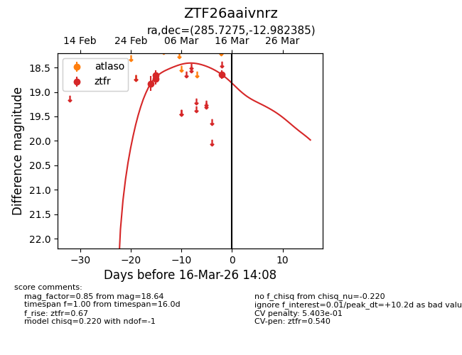
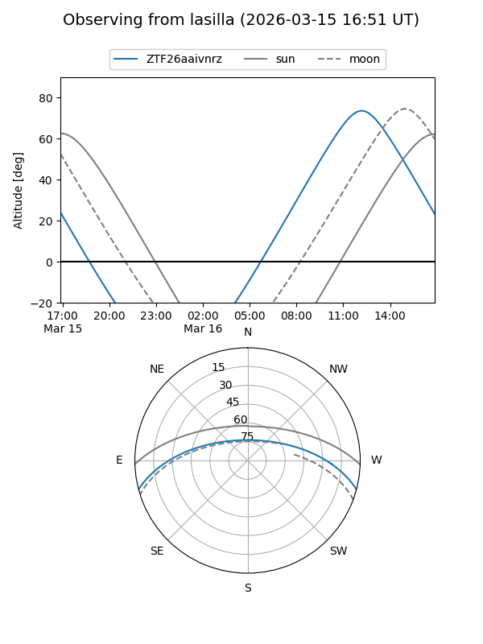
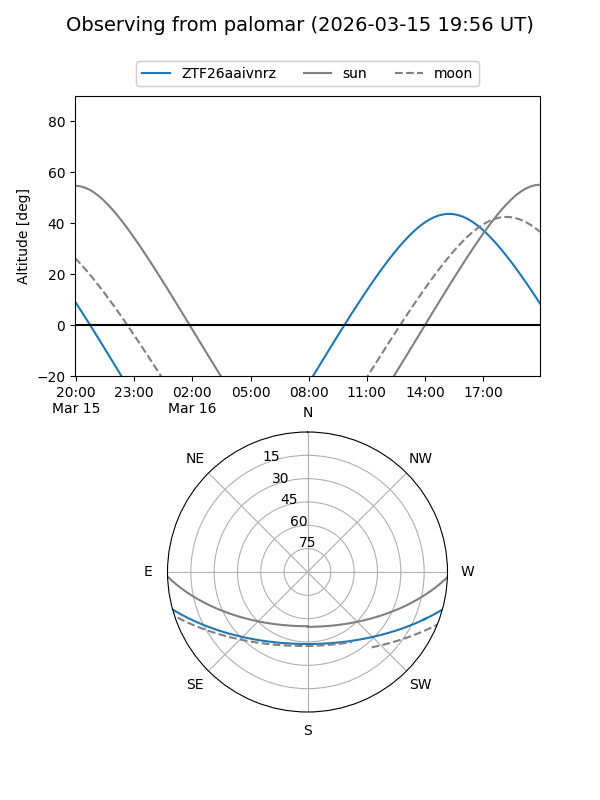
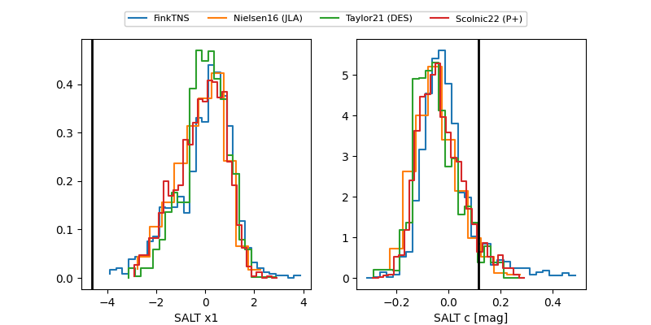

ZTF26aaivnrz
Target ZTF26aaivnrz at 2026-03-16 14:11
Aliases and brokers:
FINK: link
Lasair: link
ALeRCE: link
alt names
ZTF26aaivnrz (ztf,fink_ztf)
Coordinates:
equatorial (ra, dec) = 285.7275,-12.98238
equatorial (HMS+DMS) = 19:02:54.61,-12:58:56.59
galactic (l, b) = (22.5840,-8.38539)
Flags:
likely cv
Photometry:
last ztfr=18.64
4 ztfr detections
Lightcurve

Visibility


Additional plots
